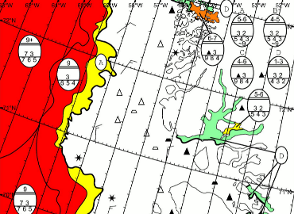

Tailored Weather Forecasts and Ice Charts
Latest ice charts from Danish Meteorological Institute. Tailored weather forecasts for uploaded sailing routes.
Coordinated Voyage
Share routes and schedules with other ships and Arctic Command.
Live AIS-data and Streamlined Reporting
AIS-data from satellite and base stations. Simplified and streamlined Greenpos reporting.
Welcome to ArcticWeb
ArcticWeb is a joint effort to improve maritime safety in the Arctic region. ArcticWeb serves as a single point of access to safety related information, provides streamlined reporting and allows for voluntary coordinated voyage through sharing of positions and planned routes. Ships in the area and their organizations may login or request access to ArcticWeb via the buttons below.

Ice Charts
The Danish Meteorological Institute, Greenland Ice Service, collects information regarding ice conditions in the waters around Greenland and distributes this information to ships primarily as ice charts and reports.

Weather
Warnings and forecasts are broadcasted by KNR (Greenland Radio) and Greenland coast radio stations. For schedules, frequencies and areas see "Admiralty List of Radio Signals".

Safety of Navigation - Greenland
A safety package containing regulations and information about special Greenland conditions is available to ships embarking on voyages in Greenland waters. The documents are available from the links below
- Welcome to Greenland Waters
- DMA Order on Technical Regulation on Safety of Navigation
- Mandatory Ship Reporting Systems in Greenland
- Links to Important Information when Navigating Greenland Waters
- Precautions in using Navigational Charts in Greenland Waters
- Coast Radio Information
- Danish Maritime Authority